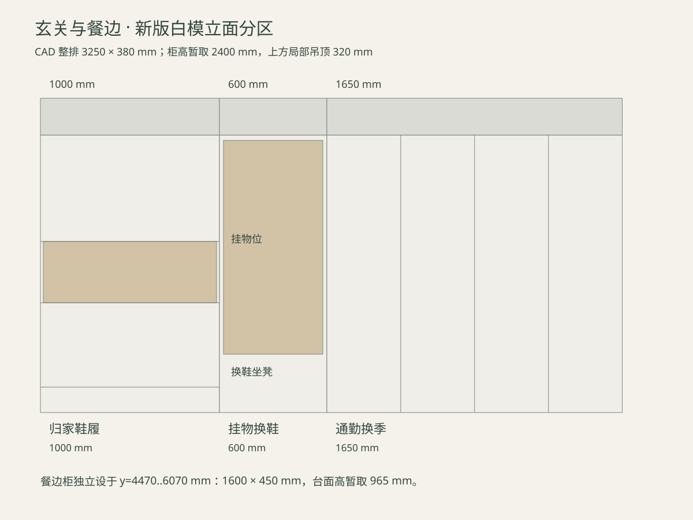

v11 将空间导览与场景设置分开；顶部可随时切换早晨 08:00、正午 12:00、傍晚 17:00，并独立开关室内灯。进入房间或漫游，可以比较自然光和灯光的变化；在“场景设置”里更改日期，观察季节差异。
太阳位置以杭州城市级经纬度、北京时间计算。六楼南面无遮挡为业主提供的条件；朝向暂按正南、楼层层间高暂按 3 m（六楼距室外地面约 15 m），完成面净高沿用 2.72 m。楼层高度用于外部地面标高，不用于人为加强太阳亮度。
窗洞、窗框、低梁、墙和顶面投射阴影；即使剖切隐藏墙顶，建筑遮光仍保留。透明玻璃近似透光，环境反射与间接光为实时近似，不含真实天气、邻楼三维数据或照度计算。室内灯来自模型灯位，开关同时影响照明和灯罩发光。灯具光通量、玻璃透射率与最终层高尚需实测，当前用于比较氛围。
查看尺寸、材质与既有方案说明
v10：阳台主封窗按业主图片改为 700 / 1600 / 1600 / 700 四列，中间两块通高固定玻璃；两侧上部 1300 mm 高窗扇向室外平开，下部 1000 mm 固定玻璃。两扇展示 35° 外开，浅灰铝框。图片标宽 4600 mm，当前 CAD 洞口约 4560 mm，按比例适配；高度按图取 2300 mm，窗顶补收口。图中 8+8 仅记录玻璃示意，具体构造及复尺待深化。
v9.2：厨房柜门、抽屉面、柜体及外露封板统一参考宜家 VEDDINGE 维丁格平滑白色漆面，采用无木纹的柔和白色。金属把手、不锈钢台面和冰箱配色保留。颜色为屏幕近似表现，以实物色板为准。宜家官方参考 ↗
v9.3：600 mm 冰箱上部改为单开门，700 / 800 mm 上部为双开门；下部均为两只全宽抽屉，延续富士白配色。侧栏可选 600 / 700 / 800 mm，默认 700 mm并记住本机选择；左侧高柜固定宽 230 mm、位置不动；靠窗的扫地机柜对应宽 740 / 640 / 540 mm。台面、洞口周边封板、基站位置和示意支管同步调整，洞口净宽保持 430 mm。漫游碰撞与 GLB 导出均对应当前配置；包管不移动。冰箱高度、深度为原概念占位，安装缝暂留 10 / 20 mm，需按实际型号复核。
v8：冰箱旁窄抽屉柜改为 2400 mm 高柜，上下分区。冰箱面板参考东芝“大白桃”富士白配色，把手改银色；本轮只改颜色，原有冰箱外形尺寸保留。官方配色参考 ↗
v7：恢复手工桌与小吊柜，扫地机移至厨房窗下并示意自动上下水；水槽龙头改到 CAD 对应侧。储物位依 CAD 约 1530 × 850 mm，补封闭柜门与长边层板；下侧书桌只放笔记本，黄色位置改装饰隔断。
“透视高亮管道”可穿过包管墙查看烟道和水管：橙色为排烟，绿色为排水 / 通气，蓝色为供水。竖井位置依图示，管径、标高及支管连接为概念示意，不是施工水电图。扫地机独立放入窗下设备柜，不占用水槽下其他设备空间。
进入漫游后，WASD 行走、拖动或方向键转头、Esc 暂停。默认开启“穿透物品”，可穿过家具、柜体及门板，墙体和包管仍保留边界；关闭后恢复家具碰撞，若人在家具内部会自动移至最近可站位置。手机可用屏幕方向按钮。视高 1.60 m，房间菜单可快速到达。
客厅继续使用 65 英寸落地电视支架，无电视柜、无茶几。
v3：入户左侧整排柜体改为 2400 mm 高柜，上方补局部吊顶，3230 mm 总长中保留 2470 mm 玄关收纳、760 mm 餐边区。厨房仍无吊柜，客卫仍为 CAD 三角台面。可打开“查看柜内分区”检视柜内结构，或打开“动线与静态净距”查看本版尺寸。
柜体深 420 mm，门板与把手另占约 46 mm；含 20 mm 顶封板共高 2400 mm；上方 320 mm 局部吊顶衔接至假定的 2720 mm 原顶。餐边区与鞋包用全高实板分开，下部采用移门。顶层收低频物品，归家凹位放钥匙和小物，雨伞需先沥水再归位。
打开玄关分区与尺寸图 ↗

净距对应模型里的静态摆放；柜门、抽屉和洗碗机开启时仍占用操作空间。床尾浅柜使用正向抽拉挂衣；容量与五金待实际产品确认。
平面依据 2026-10-29 提供的 PDF 与对应 DWG。墙体、门窗平面位置以当前 CAD 方案为基准；家具按图面占位重建。整体风格参考业主的装修需求：中古 / 包豪斯、木色、不锈钢与暖白。
- 原始净高 2820 mm；本模型暂留 100 mm 地面构造，完成面以上净高为 2720 mm。地面预留尚待确认。
- 阳台口原图标注 MH 2060 mm；本模型扣除预留后保留约 1960 mm 低梁净高，不代表最终施工尺寸。
- 窗台及窗高参考 CAD 原始结构图；窗框分格、墙面、吊顶、柜体立面、灯具及软装为概念设计。
- 主卫按当前平面保留淋浴；旧需求中的小浴缸未强行加入。家具电器不是厂家精确模型。
- 可用于讨论空间和风格；后续需依据复尺、设备选型与施工图修订。
当前为全屋 v11 概念方案；同日水槽下四设备专项尚未合入本模型。Three.js 采用 MIT 许可，随交付保留许可证。